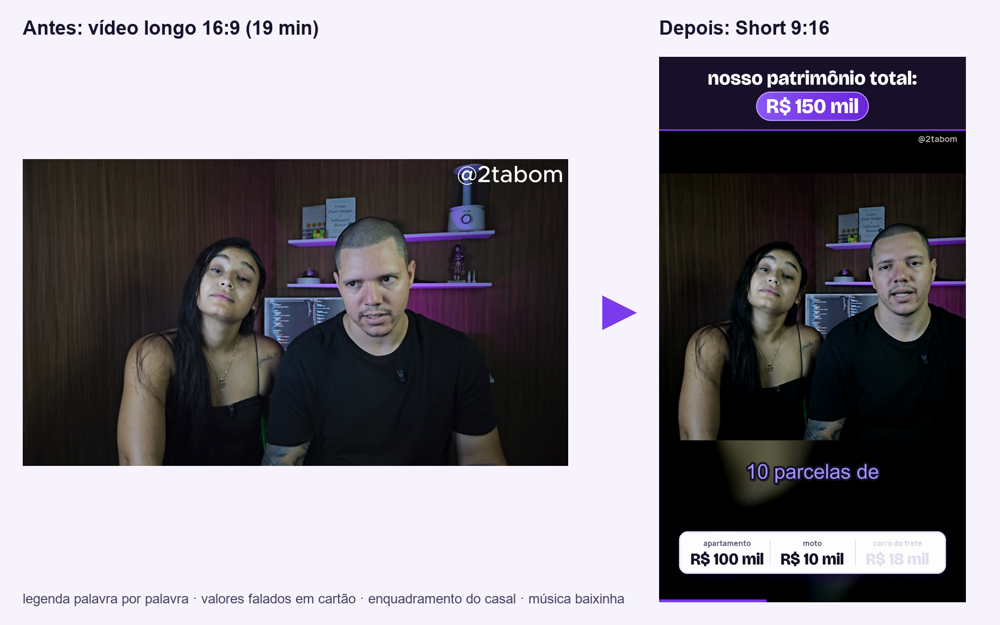
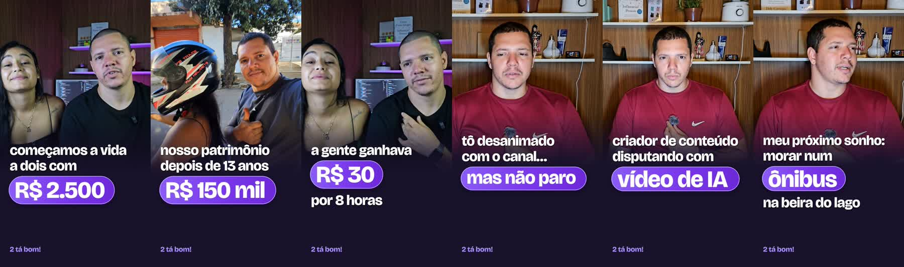
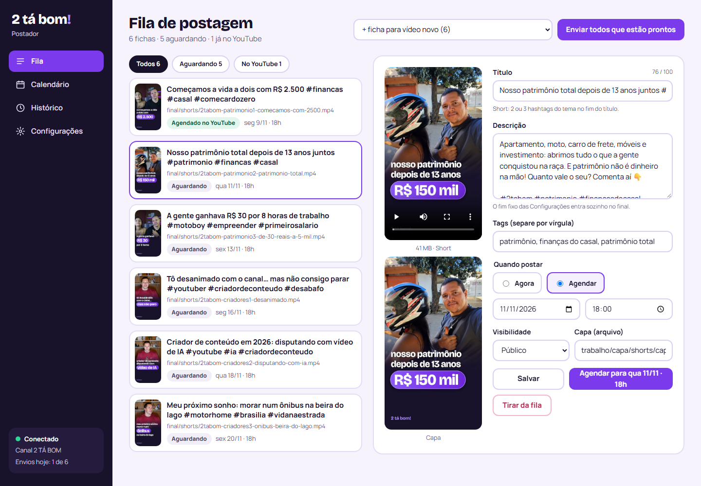
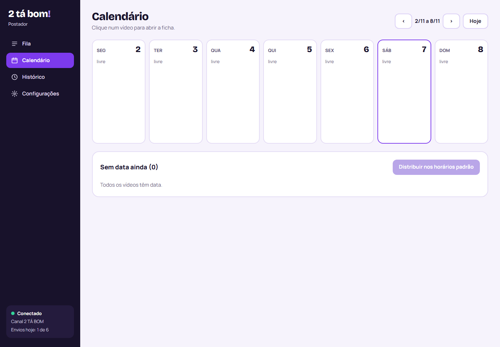
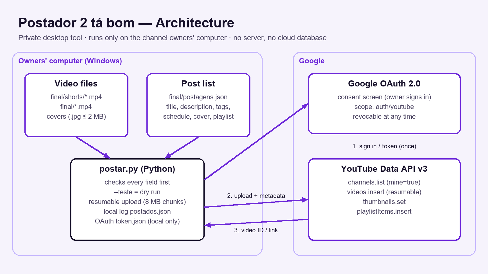

Um vídeo longo entra, Shorts prontos saem — com legenda animada, cartões de valores e capa própria — e um painel web publica e agenda tudo no YouTube. Feito para o canal 2 TÁ BOM.
O roteiro de corte vem da transcrição; o resto é automático: enquadramento vertical, legenda palavra por palavra, valores falados em cartões, música baixinha e volume padronizado.

Cinco etapas em Python, cada uma num script pequeno.
Whisper local com o tempo de cada palavra, em português.
FFmpeg acha as pausas de verdade e tira; repetições saem pela transcrição.
Recorte no rosto, ou modo largo com fundo desfocado quando são duas pessoas.
Pillow desenha as camadas; legenda ASS em karaokê; loudnorm −14 LUFS.
Arte gerada em camadas e colocada no fim do vídeo para ser escolhida como capa.
Foto, texto curto e o valor numa pílula, no padrão visual do canal.

Painel web que roda só no computador (servidor em Python puro + HTML, CSS e JS sem bibliotecas). Login OAuth 2.0 do Google, envio retomável em pedaços, agendamento, capa, playlist, validação de título e hashtags, limite de cota e confirmação antes de cada envio.


Sem servidor na nuvem: arquivos e token ficam no computador; só a API do YouTube é chamada.
